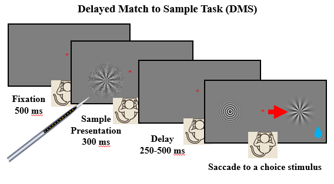
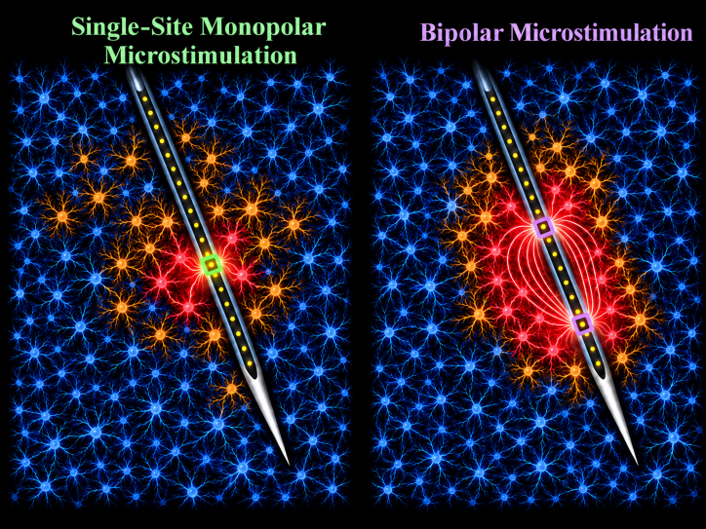
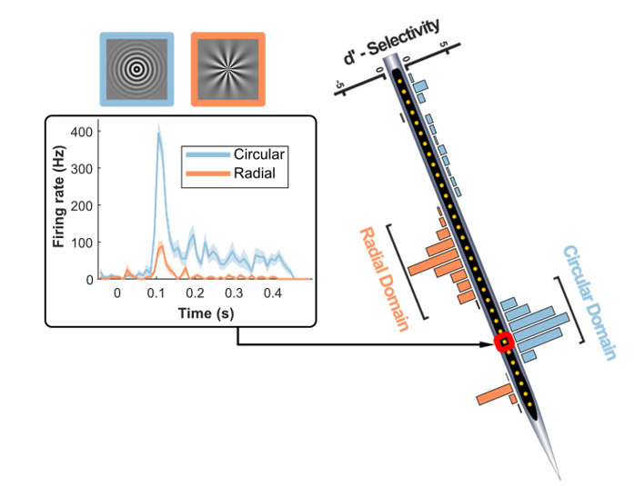
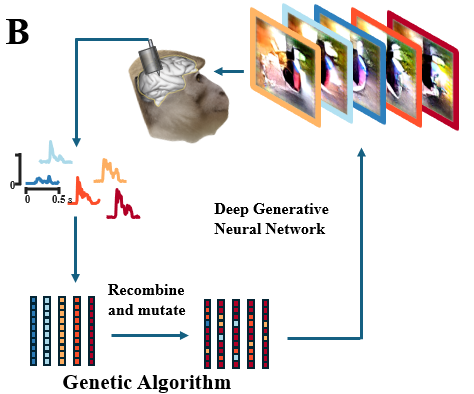

Toward a V4 visual prosthesis
Neurons that prefer similar shapes sit together in small clusters. Does perception depend on the whole cluster, or can one spot in it be enough?



The question
In visual area V4, neurons with similar shape preferences are grouped into domains less than a millimeter across. Some researchers treat these domains as basic units of shape coding. Others think the clustering may have no function. Electrical stimulation can settle part of the argument, because it activates a cluster of neurons while we measure what the animal reports seeing.
If perception reads out the pooled activity of a whole domain, then stimulating more of the domain should push perception harder than stimulating one spot in it. That is the prediction we test.
It also bears on visual prostheses. Stimulating V1 produces points of light, so shapes must be assembled from many of them. V4 neurons already encode fragments of shape, so a prosthesis that stimulates V4 in a pattern that matches its domains might evoke those fragments directly.
The experiment
A macaque judges whether a noisy grating is circular or radial in a delayed match-to-sample task. We record from V4 with 32-contact linear arrays and use the responses along the array to find stretches of contacts that prefer one pattern or the other. During the sample, on randomly chosen trials, we deliver brief electrical stimulation through a single contact, or between two contacts that bracket the domain. We then measure how stimulation shifts the animal's choices.
Results are being prepared for publication.
One trial
The sample appears over the receptive fields of the recorded neurons. The positions of the two choice gratings are randomized, so a bias toward one side of the screen cannot masquerade as a bias toward one pattern.
Closed loop with cortex in the loop
The grating task measures a stimulation effect along one axis, circular against radial. The percept evoked by stimulating a V4 domain is probably not a grating, so that axis only captures a projection of it.
To build axes that match each recording site's own preferences, I run a closed-loop experiment in collaboration with the Ponce lab at Harvard. The firing rate of a recorded V4 site is the score for a genetic algorithm. The algorithm recombines and mutates the latent codes of a deep generative network, the network renders new images, and the animal views them. Over many generations the images converge on what the site likes most, and the opposite run finds what it likes least. Interpolating between the two gives a continuum of images, which I'm testing as a discrimination axis for future stimulation experiments.
The pipeline joins Intan RHX multi-channel recording, MonkeyLogic behavioral control and socket-based communication into one adaptive loop. It is the neural counterpart of the cardiac closed loop: a reader, a model that decides, a writer, and a tight clock.
This part of the project is preliminary and is still in progress.
